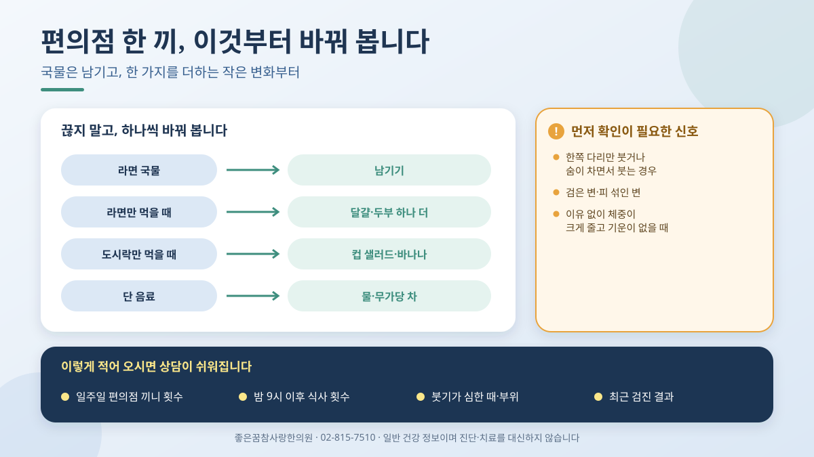

이종호 한의사 감수좋은꿈참사랑한의원 대표원장 (한의사 면허번호 19769)발행 2026-11-24 · 수정 2026-11-25
이 글의 차례
편의점을 끊을 필요는 없고, 국물을 남기고 한 가지를 더하는 작은 변화부터 시작하면 오래 이어 가기 쉽습니다.
노량진 학원가에서 시험을 준비하는 분, 상도동 숭실대 근처에서 자취하는 학생, 장승배기·대방 쪽 사무실에서 늦게까지 일하는 직장인분들은 편의점에서 한 끼를 해결하는 날이 많다고 하시는데, 라면과 삼각김밥만 이어지는 날이 길어지면 속이 더부룩하거나 몸이 붓는다고 느끼는 분도 있습니다.
메뉴를 한 번에 바꾸려 하면 며칠 못 가는 경우가 많아, 한 번에 한 가지씩 바꾸는 순서를 정해 두는 것부터 권합니다. 한쪽 다리만 붓거나 숨이 차면서 붓는다면 먼저 확인이 필요합니다.
왜 이런 불편이 생길 수 있나요
- 라면과 가공식품은 짠 편이라 많이 먹은 다음 날 얼굴이나 손이 붓는다고 느끼는 분이 있습니다.
- 탄수화물 위주로 먹고 단백질과 채소가 빠지면 금방 다시 배고파 간식이 늘기 쉽습니다.
- 단 음료를 함께 마시는 습관은 하루에 먹는 양을 생각보다 크게 늘립니다.
- 밤늦게 편의점에 들르는 날이 많으면 늦은 식사가 잠과 아침 입맛에도 영향을 줍니다.
- 학원이나 일 사이에 서서 급하게 먹으면 잘 씹지 않고 넘기게 되어 속이 더부룩해지는 분도 있습니다.
먼저 이렇게 여쭙니다
- 일주일에 편의점으로 끼니를 해결하는 날이 며칠인가요?
- 주로 고르는 메뉴는 라면, 도시락, 삼각김밥, 빵 가운데 어떤 것인가요?
- 라면 국물까지 다 드시는 편인가요?
- 먹고 난 뒤 속이 더부룩하거나 얼굴·손이 붓는다고 느끼시나요?
- 한 끼를 먹는 데 보통 몇 분이 걸리고, 앉아서 드시나요?
일상에서 먼저 해 볼 수 있는 것
- 라면을 먹을 때는 국물을 남기고 삶은 달걀이나 두부를 하나 더하기
- 도시락에 컵 샐러드나 바나나처럼 채소·과일 한 가지 곁들이기
- 단 음료 대신 물이나 무가당 차 고르기
- 밤늦게 들르는 날을 줄이도록 퇴근이나 학원 수업이 끝나기 전에 미리 한 끼 챙겨 두기
- 서서 먹기보다 10분이라도 앉아서 천천히 씹으며 먹기
- 이번 주에 바꿀 것 한 가지만 정하고, 2주쯤 이어 간 뒤 다음 한 가지로 넘어가기
상황별 예시
- 예를 들어 노량진 학원가에서 시험을 준비하며 점심은 삼각김밥, 저녁은 컵라면으로 수업 사이에 서둘러 먹는 경우에는 메뉴를 바꾸기 전에 앉아서 먹는 시간을 먼저 확보하고 삶은 달걀이나 두유를 하나 더하는 것부터 함께 정합니다.
- 예를 들어 상도동 숭실대 근처에서 자취하는 학생이 밤 11시에 편의점 도시락과 단 음료로 하루 두 번째 끼니를 먹는 경우에는 단 음료를 물로 바꾸고, 밤에는 국물 요리보다 밥과 반찬이 나뉜 도시락을 고르는 방법을 이야기합니다.
- 예를 들어 동작구 사무실에서 야근이 잦은 직장인이 저녁을 편의점 라면으로 때우고 다음 날 아침 얼굴이 붓는다고 느끼는 경우에는 국물을 남기는 것과 함께 야근 전에 미리 저녁을 챙기는 시각을 정해 봅니다.
스스로 점검해 보세요
- 일주일에 나흘 넘게 편의점으로 끼니를 해결한다
- 라면 국물을 거의 다 마신다
- 단 음료나 커피 음료를 하루 두 병 넘게 마신다
- 달걀·두부·우유 같은 단백질 없이 탄수화물만 먹는 끼니가 많다
- 서서 먹거나 10분 안에 급하게 먹는 날이 많다
- 밤 9시가 넘어 편의점에 들르는 날이 일주일에 사흘 이상이다
- 다음 날 아침 얼굴이나 손이 붓는다고 느낀다
해당하는 항목 가운데 가장 바꾸기 쉬운 것 하나를 이번 주의 목표로 정해 보세요.

한의원에서 함께 살필 수 있는 경우
- 더부룩함과 속쓰림이 자주 반복되는 경우 식사 시각과 소화 상태를 함께 살핍니다.
- 아침에 얼굴이나 손이 자주 붓는 경우 식사와 물 마시는 습관, 잠을 함께 살핍니다.
- 끼니가 불규칙해 체중과 입맛이 크게 흔들리는 경우 생활 리듬 전체를 함께 살핍니다.
좋은꿈참사랑한의원에서는 식사·잠·활동의 하루 흐름을 먼저 듣고 맥부터 짚어 본 뒤, 필요하다고 판단될 때 인바디 770으로 체성분을 확인하거나 당화혈색소 같은 검사로 함께 확인합니다. 첫 방문에는 일주일 동안 편의점에서 고른 메뉴와 시각을 함께 보며 지금 습관에서 가장 바꾸기 쉬운 한 가지를 고릅니다.
생활 계획과 침·한약 상담 등 상태에 맞는 방법을 정하며, 검사 수치의 진단과 약 조절이 필요하면 내과 진료를 함께 안내합니다. 영수증이나 결제 내역을 사진으로 모아 오시면 기록을 따로 쓰지 않아도 상담에 도움이 됩니다.
얼마나 지켜보고 언제 상담할까요
- 한 가지씩 바꾼 뒤 2주쯤 지켜보며 속과 붓기, 배고픔이 어떻게 달라지는지 적어 보세요.
- 바꿔 본 뒤에도 더부룩함이나 속쓰림이 한 달 넘게 일주일에 여러 번 이어지거나, 아침 붓기가 매일 반복되면 상담을 받아 보시기를 권합니다.
- 한쪽 다리만 붓거나 숨이 차면서 붓는 경우, 검은 변이 보이는 경우에는 기다리지 말고 바로 병원 진료를 받으세요.
이렇게 기록해 오시면 상담이 쉬워집니다
- 일주일 편의점 식사 횟수와 자주 고르는 메뉴·음료
- 먹는 시각(특히 밤 9시 이후 식사 횟수)
- 붓기가 심한 때와 부위
- 최근 건강검진 결과(혈압·혈당 등)
- 앉아서 먹은 끼니와 서서 급하게 먹은 끼니
이런 증상은 먼저 확인이 필요합니다
- 붓기가 한쪽 다리에만 심하거나 숨이 차면서 붓는 경우
- 검은 변이나 피가 섞인 변을 본 경우
- 이유 없이 체중이 크게 줄고 기운이 없는 경우
복용 중인 약이나 영양제가 있으면 먼저 알려 주시고, 처방받은 약은 처방한 의사와 상의 없이 줄이거나 끊지 않습니다. 검사 수치에 대한 진단과 약 처방은 내과 진료가 필요할 수 있습니다. 가슴 통증이나 숨참, 식은땀이 함께 오면 바로 응급실로 가세요.
함께 읽으면 좋은 글
- 자취하며 편의점 음식으로 끼니를 때우다 체중과 검진 수치가 걱정될 때는 어떻게 살피나요?
- 노량진에서 공부하며 책상에서 간식을 계속 집어 먹다 끼니때 입맛이 없고 속이 더부룩할 때는 어떻게 살피나요?
- 야식 대신 배가 고플 때 먹을 수 있는 것은 무엇인가요?

여쭙는 것
- 일주일에 편의점으로 끼니를 해결하는 날이 며칠인가요?
- 주로 고르는 메뉴는 라면, 도시락, 삼각김밥, 빵 가운데 어떤 것인가요?
- 라면 국물까지 다 드시는 편인가요?
생활에서 해 볼 것
- 라면을 먹을 때는 국물을 남기고 삶은 달걀이나 두부를 하나 더하기
- 도시락에 컵 샐러드나 바나나처럼 채소·과일 한 가지 곁들이기
- 단 음료 대신 물이나 무가당 차 고르기
한의원에서 함께 살필 것
- 더부룩함과 속쓰림이 자주 반복되는 경우 식사 시각과 소화 상태를 함께 살핍니다.
- 아침에 얼굴이나 손이 자주 붓는 경우 식사와 물 마시는 습관, 잠을 함께 살핍니다.
- 끼니가 불규칙해 체중과 입맛이 크게 흔들리는 경우 생활 리듬 전체를 함께 살핍니다.
먼저 확인이 필요한 신호
- 붓기가 한쪽 다리에만 심하거나 숨이 차면서 붓는 경우
- 검은 변이나 피가 섞인 변을 본 경우
- 이유 없이 체중이 크게 줄고 기운이 없는 경우
한눈에 보는 표
| 구분 | 핵심 |
|---|---|
| 여쭙는 것 | 일주일에 편의점으로 끼니를 해결하는 날이 며칠인가요? 주로 고르는 메뉴는 라면, 도시락, 삼각김밥, 빵 가운데 어떤 것인가요? |
| 생활에서 해 볼 것 | 라면을 먹을 때는 국물을 남기고 삶은 달걀이나 두부를 하나 더하기 도시락에 컵 샐러드나 바나나처럼 채소·과일 한 가지 곁들이기 |
| 한의원에서 함께 살필 것 | 더부룩함과 속쓰림이 자주 반복되는 경우 식사 시각과 소화 상태를 함께 살핍니다. 아침에 얼굴이나 손이 자주 붓는 경우 식사와 물 마시는 습관, 잠을 함께 살핍니다. |
| 먼저 확인이 필요한 신호 | 붓기가 한쪽 다리에만 심하거나 숨이 차면서 붓는 경우 검은 변이나 피가 섞인 변을 본 경우 |
자주 묻는 질문
편의점 음식은 아예 피해야 하나요?
그렇지 않습니다. 무엇을 함께 고르고 어느 시각에 먹는지가 더 중요해, 지금 습관에서 바꾸기 쉬운 것부터 함께 정리합니다.
단백질 음료로 끼니를 대신해도 되나요?
바쁜 날 한 번쯤은 괜찮지만 매 끼니를 대신하면 씹는 식사가 줄어 금방 배고파지는 분도 있습니다. 하루 한두 끼는 밥과 반찬이 있는 식사를 유지하시기를 권합니다.
편의점에서 단백질을 더하려면 무엇을 고르면 될까요?
삶은 달걀, 두부, 우유나 두유, 닭가슴살 같은 것을 하나 곁들여 보세요. 이미 짠 음식이 많다면 양념이 적은 것을 고르시기를 권합니다.
진료 시간은 어떻게 되나요?
좋은꿈참사랑한의원은 평일 09:30~20:00(점심 13:00~14:00), 토·일·공휴일 09:30~15:00에 진료합니다.
좋은꿈참사랑한의원은 재진 때 지난번 이야기부터 이어서 여쭙니다. 진료시간과 예약은 오시는 길에서 확인하세요.
어디서 상담받을 수 있나요?
좋은꿈참사랑한의원은 서울 동작구 만양로2길 2 신성빌딩 3층·5층(서울 동작구 상도동, 7호선 상도역 3번 출구 근처)에 있습니다. 한의사 3명(이종호 대표원장, 조영기 수석진료원장, 정원영 진료원장)이 진료합니다. 진료시간은 평일 09:30~20:00(점심 13:00~14:00), 토·일·공휴일 09:30~15:00이며, 방문 전 전화로 확인을 권합니다. 예약은 네이버 예약, 카카오톡 상담, 전화 02-815-7510로 받습니다.
이 글은 일반적인 건강 정보이며 개인의 진단이나 치료를 대신하지 않습니다. 증상이 있거나 복용 중인 약이 있다면 진료를 통해 확인하세요. 치료 효과는 개인마다 다를 수 있습니다.
작성 기준: 일반적으로 알려져 있는 건강 정보를 참고해 정리했습니다(대표원장 감수). 증상 기록은 1~2주 동안 하루 1회, 비슷한 시간에 적어 오시면 지난 상태와 비교하기 쉽습니다.